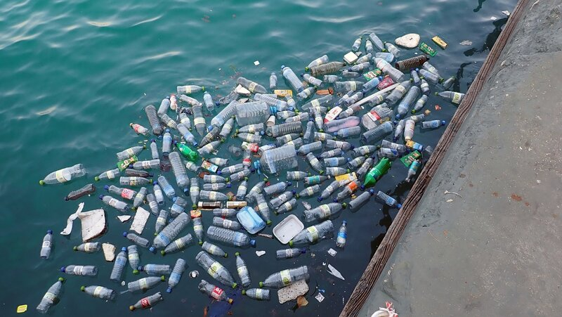

Ocean polluttion effects the marine ecosystem and also marine life. Contaminants effect the quality of the water, while plastic can entrap the marine wildlife, making it harder for them to thrive normally.
This page is to archive websites for that show where plastics will end up when drifting in the Ocean.